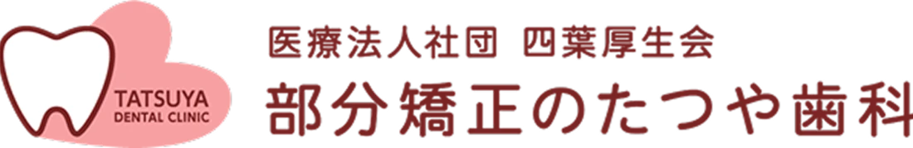
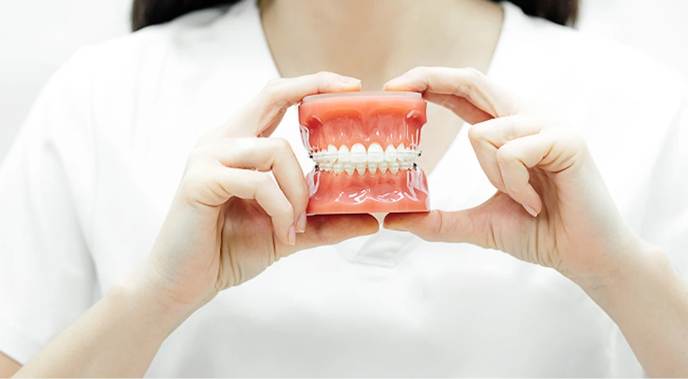
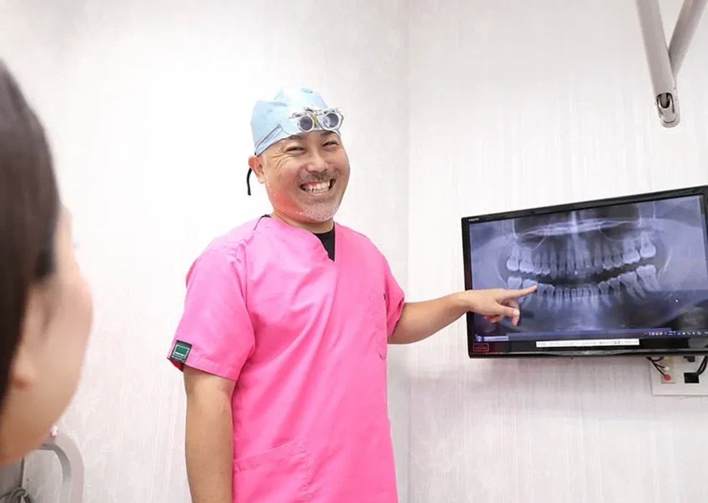
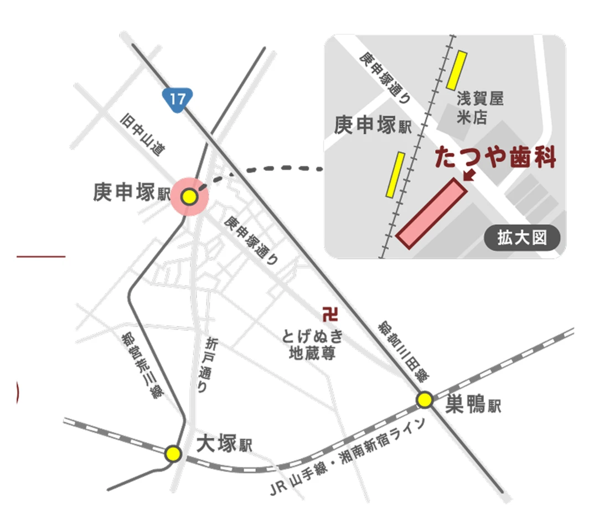

前歯の
ワイヤー部分矯正
前歯の重なり・ねじれ・すき間。
気になる部分と噛み合わせを診て、
一人ひとりの治療計画を立てます。

漫画・トークの登場人物は架空です。
医院ロゴ・模型・診察写真・地図の引用元：たつや歯科 公式LP ↗
前歯だけで整えられるか、診察で確認
たつや歯科では、前歯の重なり・ねじれ・すき間などを対象に、ワイヤーを使った部分矯正を行っています。
- 気になる場所
- 前歯の見た目や並び方
- 診断で見る範囲
- 歯列全体・骨格・噛み合わせ
前歯を動かしたときの噛み合わせも含めて、歯科医師が診察・検査で適否を判断します。お口の状態によっては全体矯正など別の治療が必要です。
治療費と別途かかる費用
医院は、治療計画とともに見積もりを提示する総額制を案内しています。最低治療費と、診察後に決まるご自身の総額を分けてご確認ください。
ワイヤー部分矯正の最低治療費231,000円〜（税込）税抜210,000円〜 ｜ 装置1本38,500円（税込）× 最低6本
治療費は、装置を付ける歯の本数などによって変わります。
- 治療費に含むもの
- 必要な処置・治療中の調整・歯並びを保つ装置（リテーナー）。
- 別途費用
- 初診料等。公式料金表には装着前のクリーニング、治療後のメインテナンス費用も掲載されています。
- 院内分割
- 医院は金利・手数料のない院内分割を案内しています。回数・月額・適用条件は個別に確認してください。
初診の表示は、公式LPで3,000円、公式料金表で検査・診断約4,000〜4,500円（3割負担）です。検査・診断費用が初診料に含まれるかなど、初日の支払額は予約時に医院へご確認ください。
医院の公式料金表 ↗診察から、装置を外した後まで

前歯の見た目に加えて骨格や噛み合わせを診察し、治療法を検討します。写真：たつや歯科公式LP
- 診察・検査気になる歯と希望を伝え、適否を確認。
- 治療計画・見積もり治療法、リスク、期間と総額を相談。
- 装置の装着・調整通院しながら歯を動かす。
- 歯並びの維持装置を外した後は、後戻りを抑える保定装置を使う。
治療期間には個人差があります
医院掲載の目安は約3〜6か月。公式LPには8〜12か月を要した症例もあります。保定装置の種類・使い方・期間もご自身の計画で確認してください。
主なリスク
治療中の痛み、歯根吸収（歯の根が短くなること）、後戻りなどがあります。歯並びや口腔内の状態によってリスクは異なります。
症例紹介｜上の前歯のねじれ
挿絵の主人公とも別の方の症例です。
よくある質問
前歯に被せ物があっても相談できますか？
被せ物や周囲の歯の状態で判断が変わります。どの歯かを伝え、診察・検査で確認してください。
挙式までに終わりますか？
検査前に終了日は確定できません。治療中は装置を一時的に外すことも基本的に難しいため、予定を医院にお伝えください。
たつや歯科 巣鴨西クリニック
